PromiseHub · Video 75
Receive notifications in real time
One notification center for youth, mentors and staff, live, and chosen by each person
One notification center for youth, mentors and staff, live, and chosen by each person
Her notices, then one arrives.

GET /notifications · kinds learning, assignments, messages, announcements · L2-109
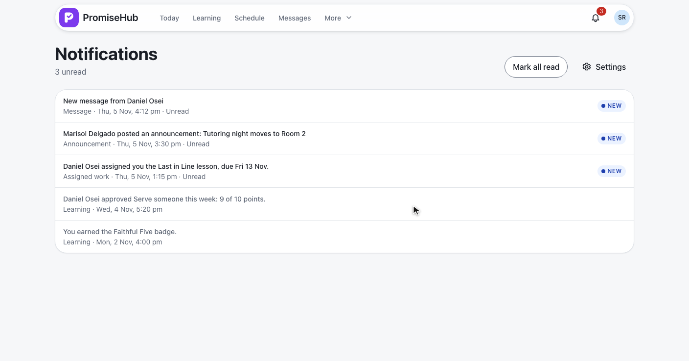
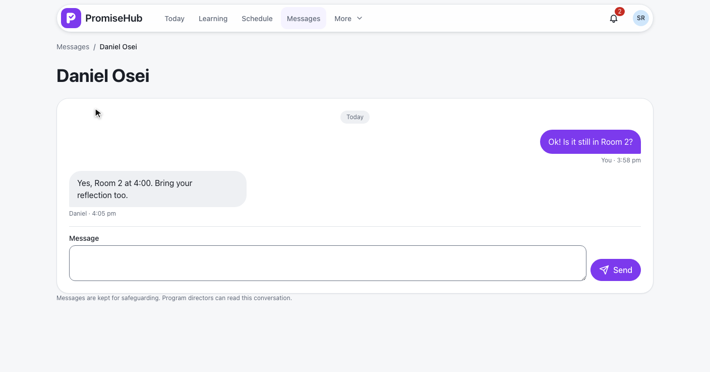
No words in the notice · read on open · L2-110
| Kind | Raised by | Needs |
|---|---|---|
assignments | AssignWorkHandler, to each youth account | Learning and Mentoring |
messages | SendDirectMessageHandler, to the other participant | Messages and Mentoring |
announcements | ComposeAnnouncementHandler, sent now | Messages |
learning, mentoring, incidents | Grades, badges, flags, incidents | Their module |
NotificationWriter · NotificationKinds · ADR 0069
Each sees only their own.
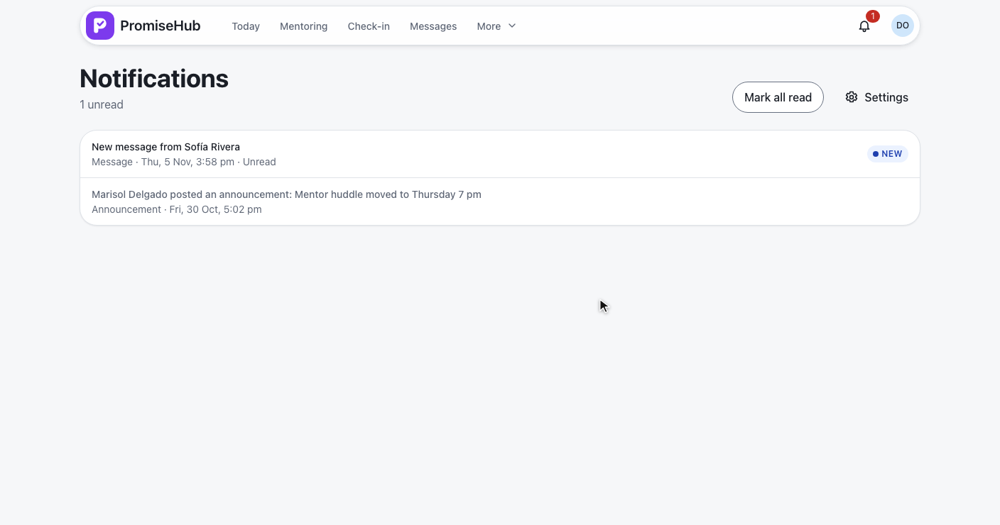
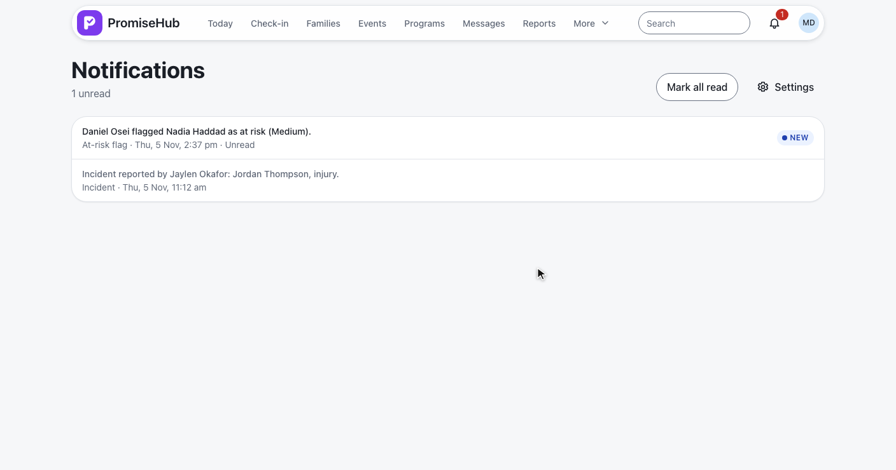
Filtered by membership and organization · 404 for anyone else’s · L2-001
| When | Event | Sent to |
|---|---|---|
| A save adds a notice | notification {} | Its recipient |
| A save reads one | notification {} | The reader’s other devices |
| Reconnecting | open | The bell and the page fetch again |
NotificationEvents save interceptor · GET /realtime · one shared EventSource · L2-110
Announcements off, saved.
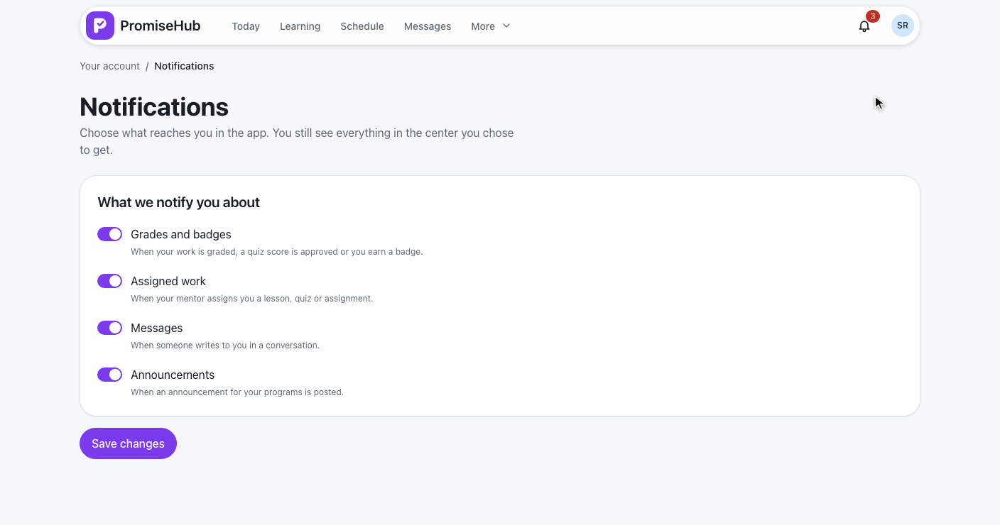
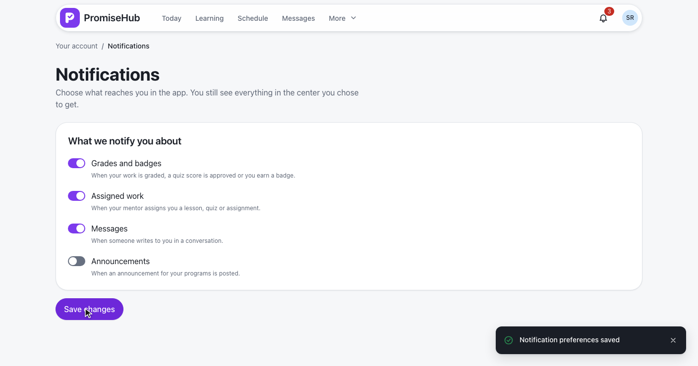
GET/PUT /notifications/preferences · 422 for a kind not offered · audited · L2-111
The center and the switches.
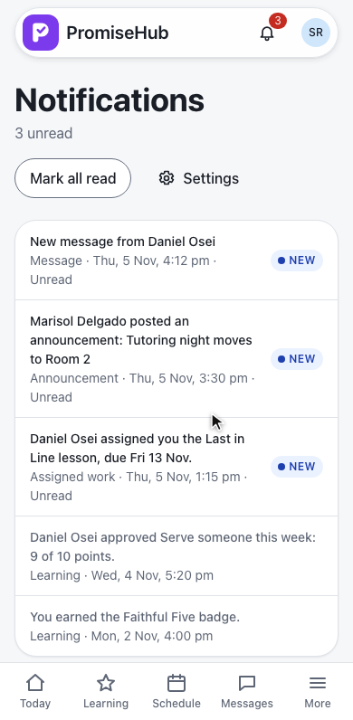
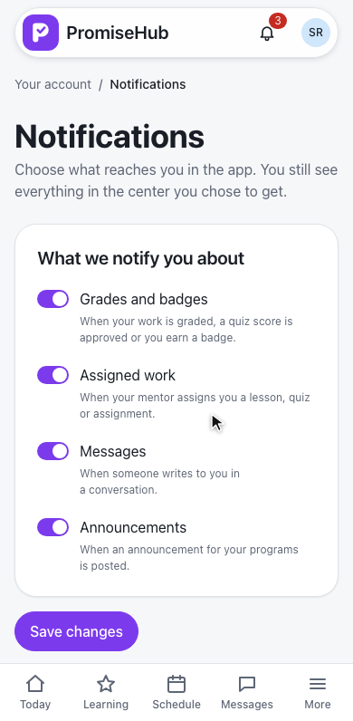
Empty, error, Messages off, failed, nothing to choose.
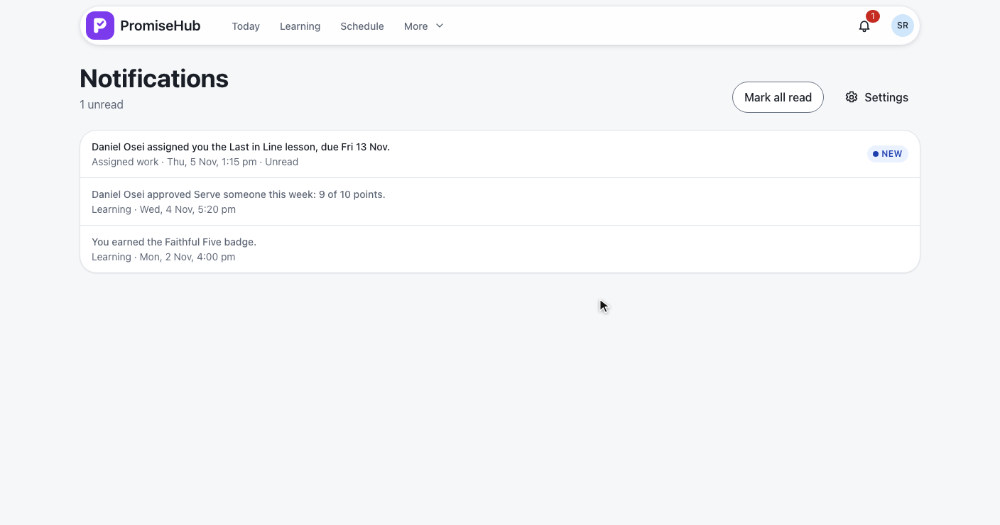
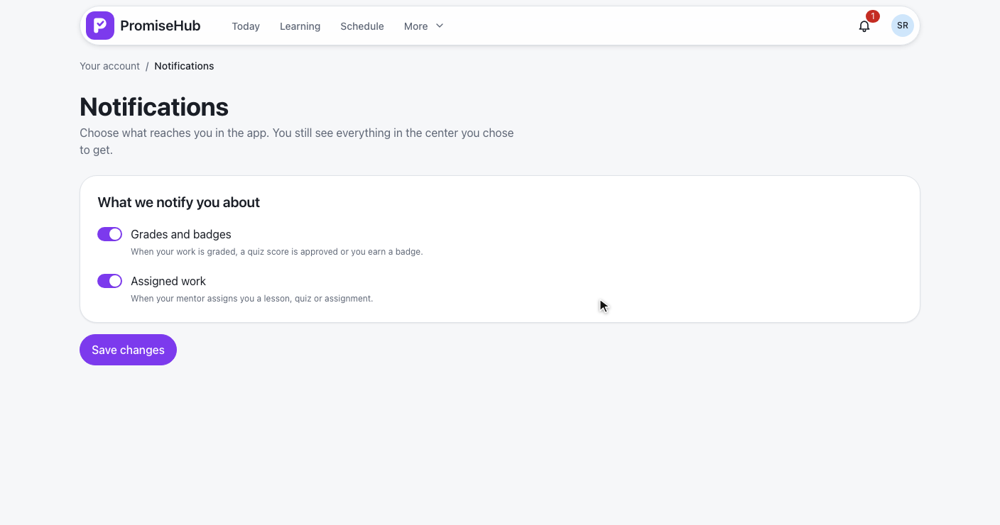
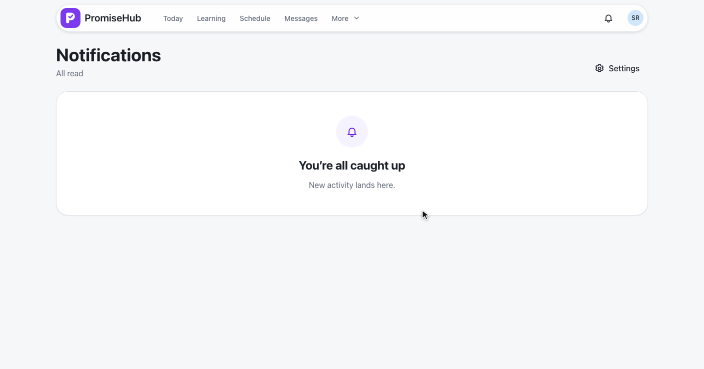
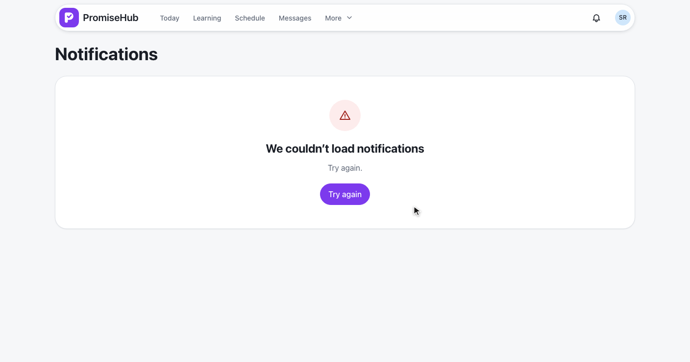
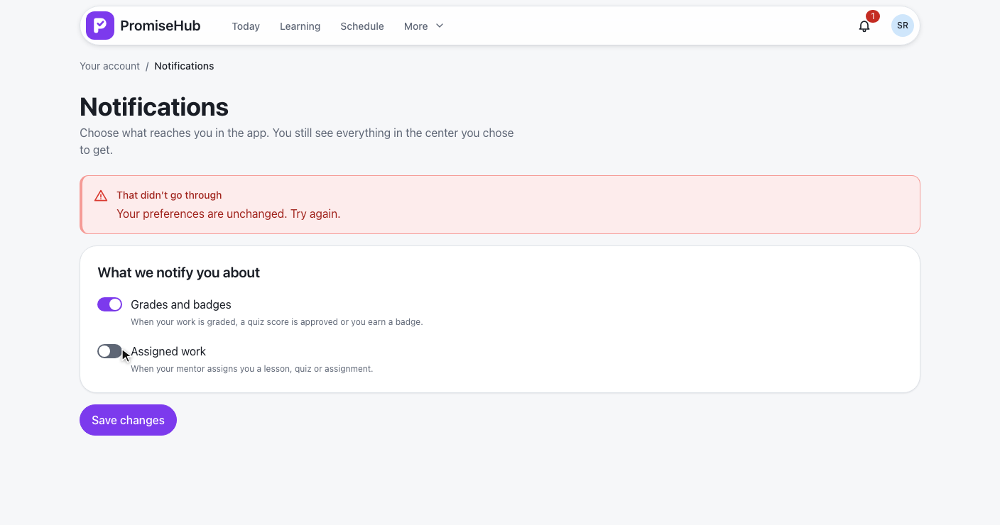
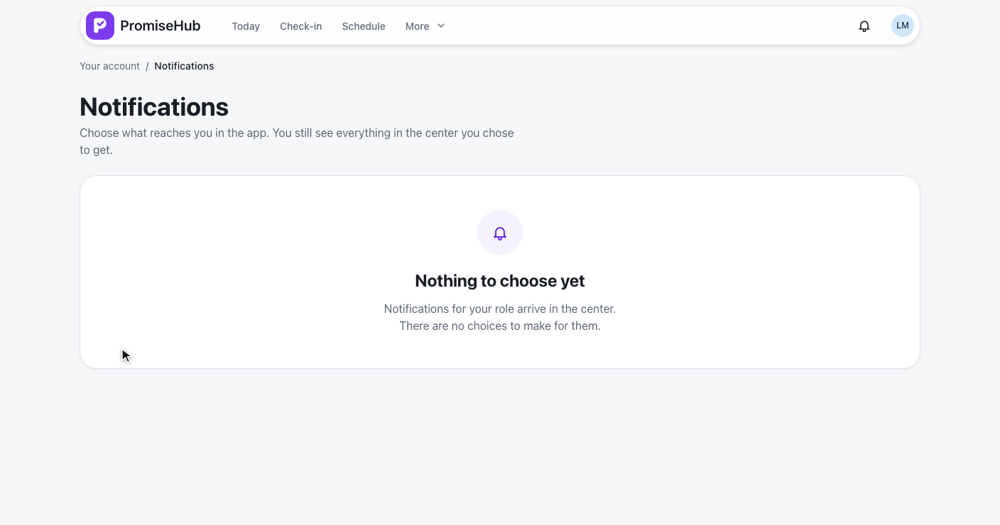
ReceiveNotificationsTests: producers, kinds hidden while a module is off, nothing across people or organizationsRealtimeTests: the notification event to the recipient only, and after a readNotificationPreferencesTests: offered kinds, 422, audit, one person onlyreceive-notifications and notification-preferences specs with axe
Next: manage personal settings